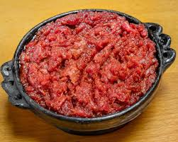

Kitfo

Kitfo is a very popular dish from the Gurage region of Ethiopia and one of the easiest to make. Kitfo literally means choppedor minced beef. It's served along with homemade cottage cheese during holidays and special occasions, such as Eid Al-adha. Lean red meat is mixed with clarified butter and Ethiopian herbs and spices, and it gets some heat from the spiced chile blend, mitmita. Traditionally, kitfo is served medium rare, but could be prepared according to the taste of the diner.
INGREDIENT
- 2 pounds lean beef, such as boneless knuckle or top round
- 1/2 cup kibbeh (seasoned clarified butter) or ghee
- 2 tablespoons mitmita (Ethiopian spiced chile blend)
- 1/2 teaspoon ground korerima (black cardamom)
- 1/4 teaspoon koseret powder (earthy, woodsy dried Ethiopian herb)
- 1/4 teaspoon fine salt
- Homemade farmer's or cottage cheese made from low-fat buttermilk, if available, or other cottage cheese, for serving
- Gomen Kitfo, recipe follows, for serving
- Injera, for serving
INSTRUCTIONS
- Cut the beef into thin slices, trim any fat and then mince into very small cubes, preferably by hand, or in a food processor. Set the beef aside, spreading it over a plate.
- Melt the kibbeh in a medium skillet over very low heat. Add the mitmita, korerima, koseret and salt and stir with the butter. Then, add the minced beef and mash to mix it with the spiced butter; keep mixing until the beef reaches your desired temperature, 3 to 5 minutes for rare. Serve with farmer's or cottage cheese, Gomen Kitfo and injera.